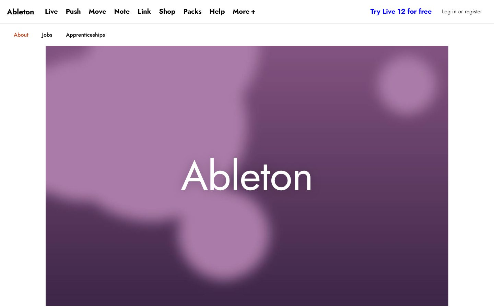
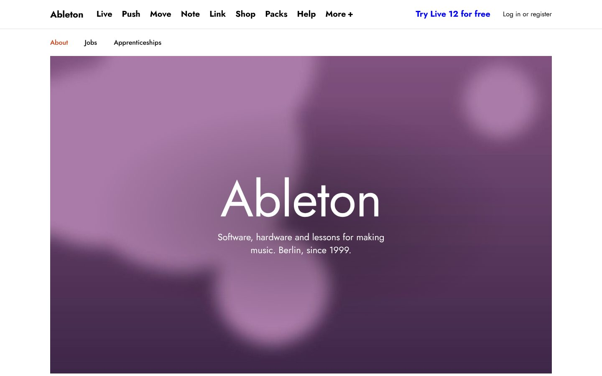
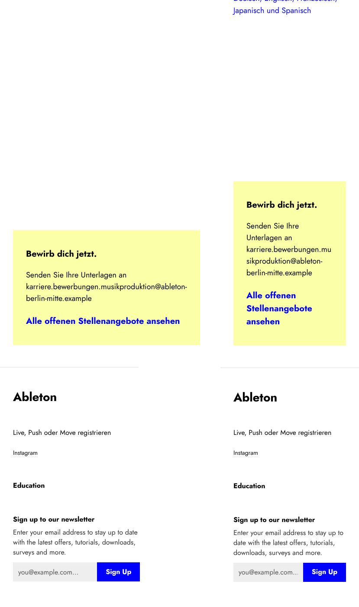

Design stack · test run
84 skills,
one About page.
Every installed skill was run against the Ableton practice build. What follows is what each one caught, what changed, and how to run it yourself.
The loop for every skill
01BaselineBuild, screenshot at 1440 and 390, audit.
02Run the skillIts own script where it has one: inspect.mjs, impeccable detect, search.py.
03Fix the findingsOne commit per concern, smallest change that works.
04Measure againSame tool, same numbers. No number, no claim.
Measured, not felt
taste-skill FAIL findings
design-taste-frontend
links under the 24px target
web-design-guidelines
sideways overflow with worst-case data at 320px
break-ui
initial layout, 390px, 4× CPU throttle
react-best-practices
AI-writing tells in the page copy
humanizer + stop-slop
motion findings, verdict Approve
review-animations
The first screen now says what this is



Worst-case data stopped breaking it
- German compounds, Japanese, an unbreakable e-mail, a 404 image
- Overflow 165px → 0 at 320px, 95px → 0 in RTL
- Re-run anytime: ?data=worst (dev only)
Run it on your Mac
npm install && npm run dev- Open
localhost:5173/?data=worstat 320px - Pick a hero:
git checkout prototype/hero - Build /jobs from
docs/issues/001–005